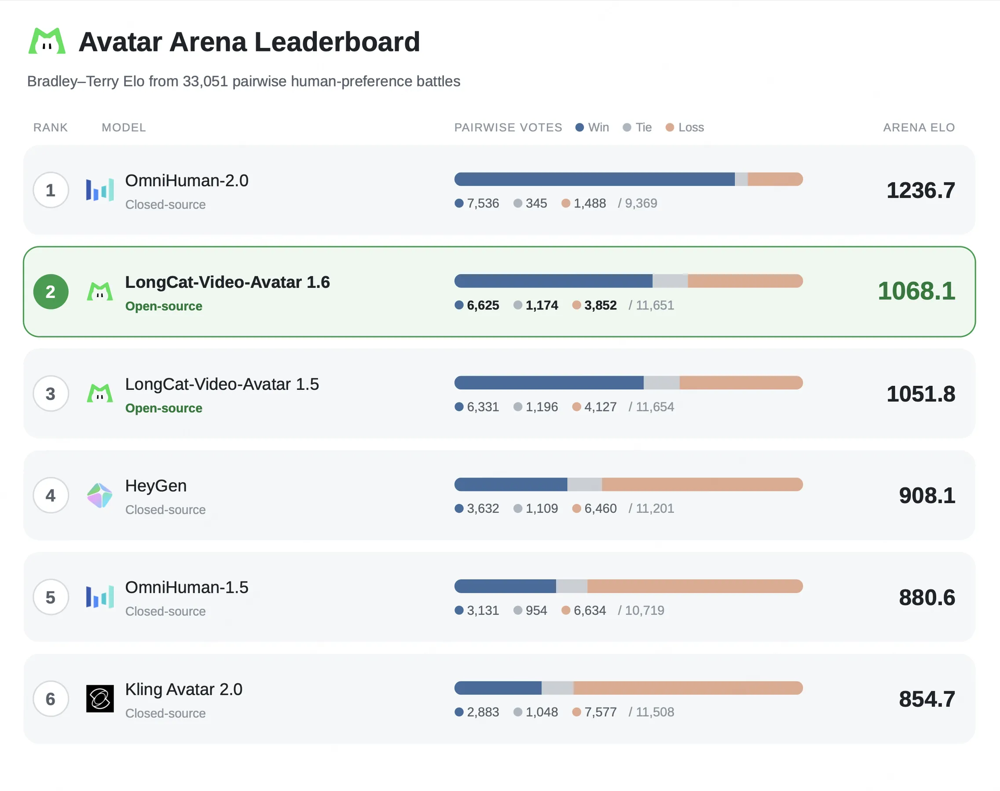

发布谱系、开放范围与许可
| 阶段 | 官方公告日 | 变化与归档方式 |
|---|---|---|
| LongCat-Video | 2025-10-25 | 基础视频生成模型；是Avatar的底座，不据此把Avatar算通用正代 |
| Avatar初版 | 2025-12-16 | 音频驱动角色动画，支持文字/图片条件、续写和单/多路音频；本family首个已核公告 |
| Avatar 1.5 | 2026-05-21 | 音频编码器由Wav2Vec2换Whisper-Large，少步蒸馏八步、单/多流与风格泛化 |
| Avatar 1.6 | 2026-11-15 | 同架构、DMD/OPSD两LoRA、长rollout及端到端执行优化；并入原family |
模型卡声明权重MIT，并明确不授予美团商标或专利权。项目页展示素材注明仅学术用途、不可商用；这针对示例图像/音频，不能反过来把模型MIT误写为非商用，也不能因模型MIT就认为所有演示人物、音频均可商用。
原生任务包括Speech-Text-to-Video、Speech-Image-to-Video与Video Continuation；多人示例是Speech-Image-to-Video和续写。输入音频是驱动条件，本文不据此推断能凭文字自行合成全部语音，也不把多人驱动等同开放世界互动理解。需要基础LongCat-Video与Avatar权重，样例中2GPU/CP2是运行命令，不是已证最小显存或实时吞吐。
后训练线索与推理执行契约
官方发布说明列出RL、改进classifier-free guidance的DMD少步蒸馏、长视频rollout和on-policy distillation，但没有在已读网页中给出奖励/监督构造与完整目标。不能仅根据DMD或OPSD名称补写未披露算法细节、证明防漂移机制或训练收益归因。
| 执行项 | 已公开含义 | 复现实验应保留 |
|---|---|---|
| loraA | DMD LoRA | checkpoint与混合位置 |
| loraB | OPSD LoRA | 后半程默认只用OPSD |
| mix_steps=N | 前N步用alpha×DMD+(1-alpha)×OPSD，其余8-N步仅OPSD | N、alpha、总步数 |
| 默认N=4、alpha=1.0 | 前四步DMD-only，后四步OPSD-only | 不能称全程同一LoRA或四步生成 |
| INT8 | 可选weight-only INT8 DiT/base_model_int8 | 不同于激活量化、与FP8互斥 |
| FP8 | 需Transformer Engine的PyTorch/CUDA支持；质量优先时减少FP8层数 | 实际量化层与后端 |
| compile_dit/compile_vae | 首几次有追踪编译成本，同shape可复用；新shape可能重新编译 | 冷/热运行分别计时 |
| FA3 | Hopper上启用FA3、关闭FA2；默认配置是FA2 | 内核版本与硬件 |
| 多于2GPU | 可启用All-to-All workspace，nproc与context_parallel_size匹配GPU数 | 通信拓扑与CP参数 |
单人at2v/ai2v、多人ai2v分别使用对应入口，需use_distill、model_type=avatar-v1.6和OPSD路径；续写示例另给num_segments=5、ref_img_index=10、mask_frame_range=0。这些示例参数不代表每片段固定时长或最大视频长度。脚本未执行、源码未逐字段审计，未宣称部署可复现性已经验证。
完整Arena读数、反例与研究判断

| 系统 | 胜 | 平 | 负 | 该模型参与投票 | Bradley–Terry Elo |
|---|---|---|---|---|---|
| OmniHuman-2.0 | 7536 | 345 | 1488 | 9369 | 1236.7 |
| LongCat-Video-Avatar 1.6 | 6625 | 1174 | 3852 | 11651 | 1068.1 |
| LongCat-Video-Avatar 1.5 | 6331 | 1196 | 4127 | 11654 | 1051.8 |
| HeyGen | 3632 | 1109 | 6460 | 11201 | 908.1 |
| OmniHuman-1.5 | 3131 | 954 | 6634 | 10719 | 880.6 |
| Kling Avatar 2.0 | 2883 | 1048 | 7577 | 11508 | 854.7 |
六系统有15种配对；各模型参与投票合计66,102，恰为33,051的两倍，因为每票涉及两个模型。1.6的6625/11651是对所有对手汇总的胜票比例，不是对1.5的直接胜率，不能从汇总图恢复任意单一配对结果。官方README与图的33,051口径相符，但评审人数、独立输入数、置信区间、逐例失败及采样温度等未在本轮材料中完整披露。
官方强调缓解嘴部夸张/发紧、唇色过红、嘴部时序抖动和自回归续写累积误差。项目页有1.5/1.6同输入对照及唱歌、表演、直播、动画、多角色交互展示；它们是展示，不能代替全体输入分布的失败率。当前资料没有可复核的E2E速度表与具体硬件/视频规格，不补造“实时”或加速倍数。